Tried:
Reached up to 90% training accuracy, up to 85% validation accuracy, and 62% speaker-independent accuracy
Trained Critic using: 1) predicted word, 2) 64-dim encoded value
Critic using predicted word from LSTMLipReader - each video was trained by giving as input: 1) correct words, 2) predicted words (80% accuracy), 3) wrong words
Critic using encoded value from LSTMLipReader - each video was trained by giving as input: 1) predicted words (80% accuracy), 2) wrong words
Using encoded values instead of predicted words does seem to offer some advantage
Retained LSTM weights, replaced the last layer of LipReader models with Dense layers to match the Hindi vocabulary considered
Tried with: 1) LSTM -> word prediction, 2) LSTM -> encoding into (64) dimensions -> word prediction
Need to find out if graphs are good for progress
Speaker-dependent training accuracy - 91.61%, validation accuracy - 84.82%
Speaker-independent validation accuracy - 61.73%
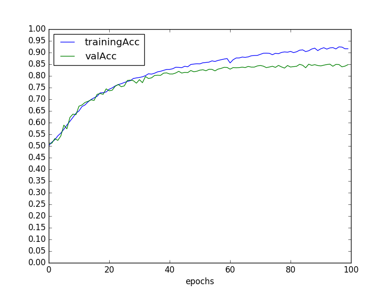
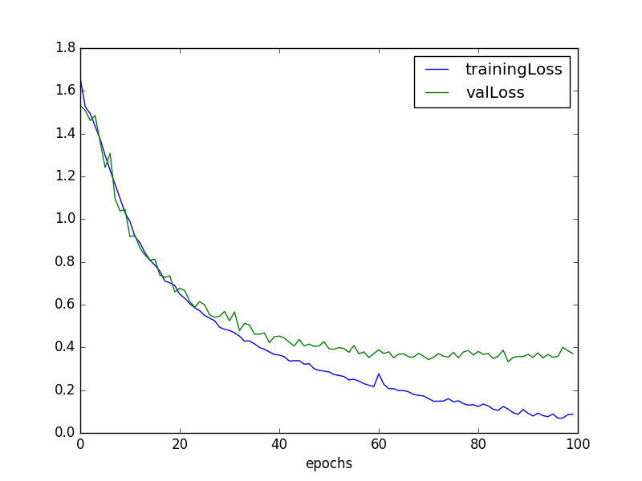
Speaker-dependent training accuracy - 90.03%, validation accuracy - 84.85%
Speaker-independent validation accuracy - 61.17%
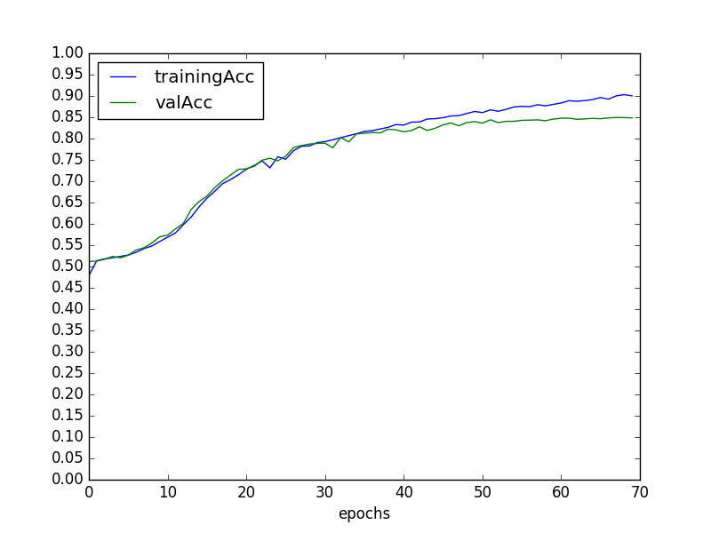
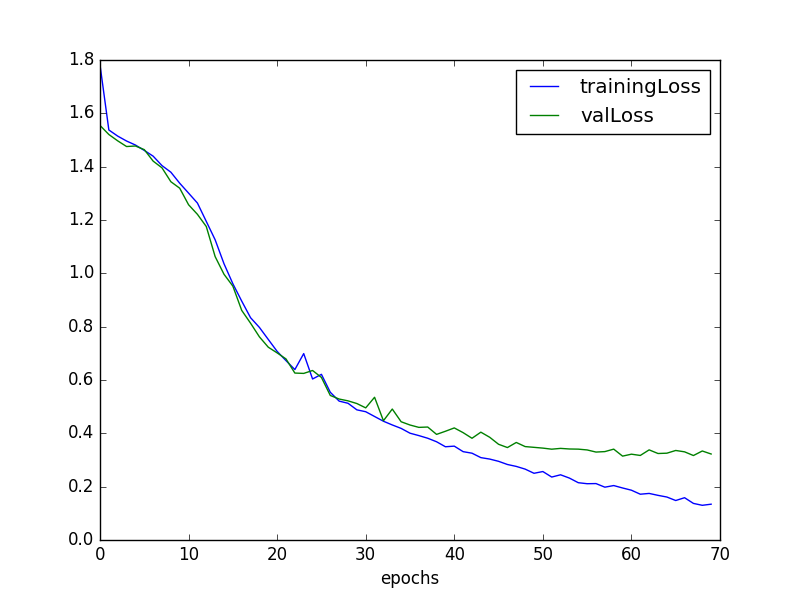
Speaker-dependent training accuracy - 84.17%, validation accuracy - 83.04%
Speaker-independent validation accuracy - 62.02%
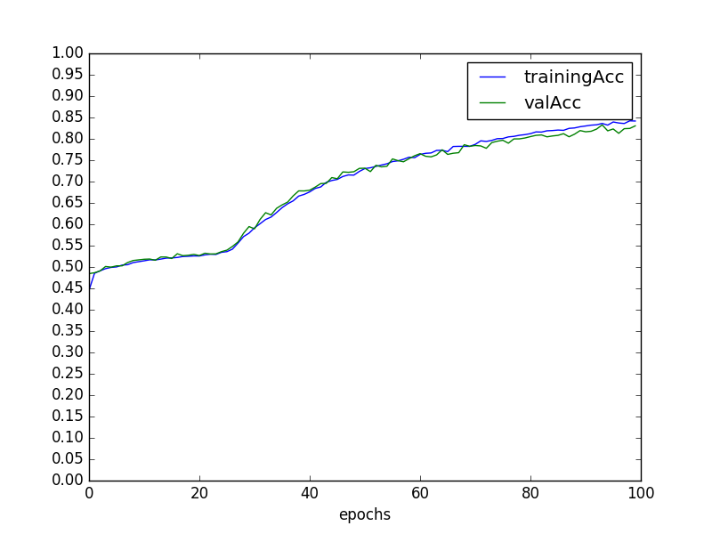
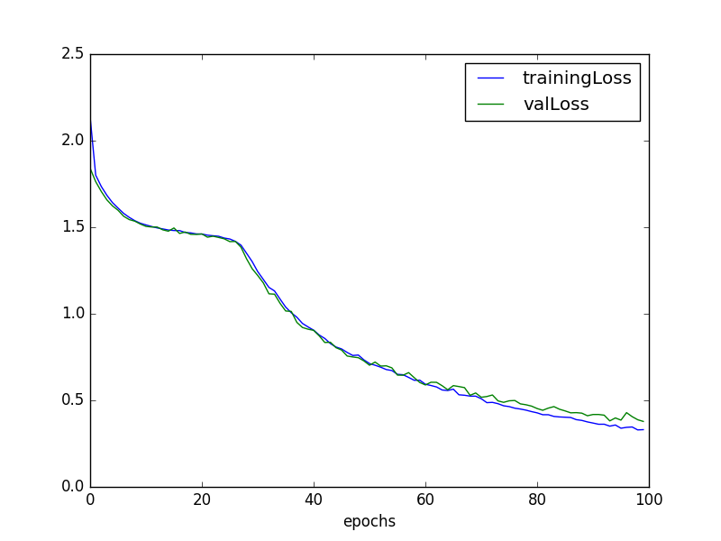
**Only ran for 100 epochs, can proceed further!!
Speaker-dependent training accuracy - 90.10%, validation accuracy - 78.90%
Speaker-independent validation accuracy - 58.19%
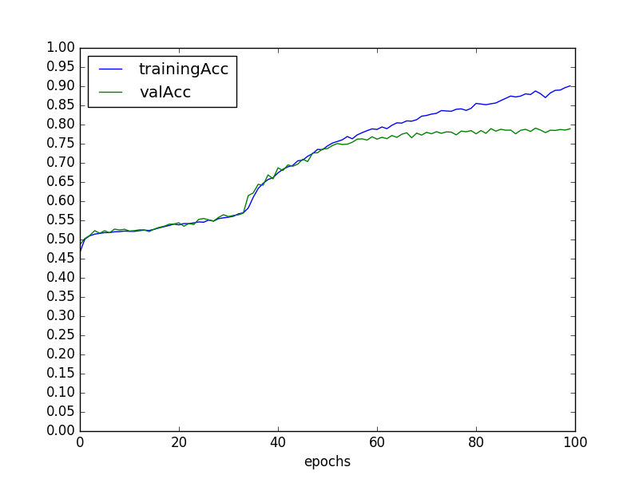
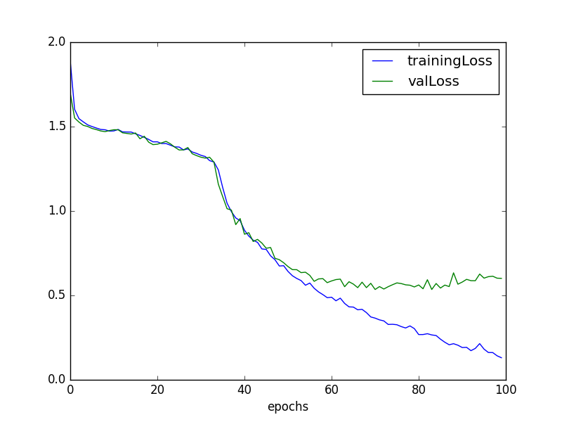
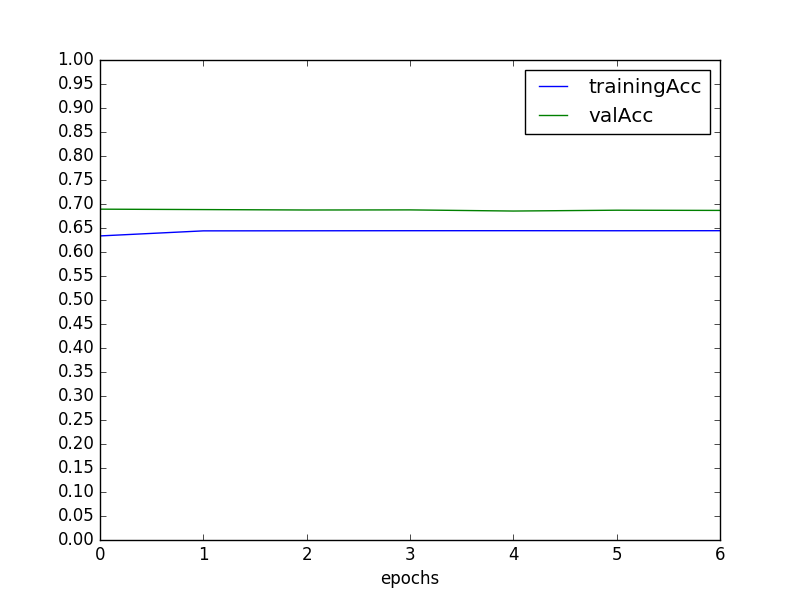
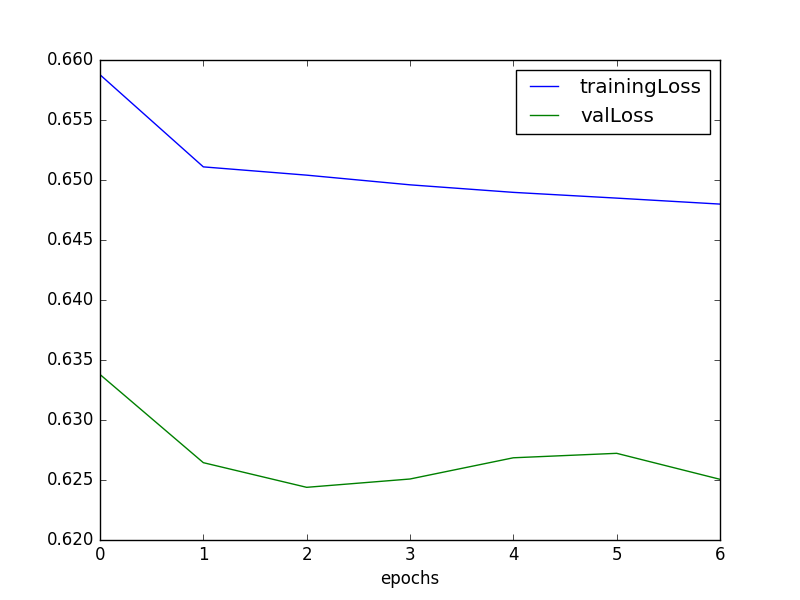
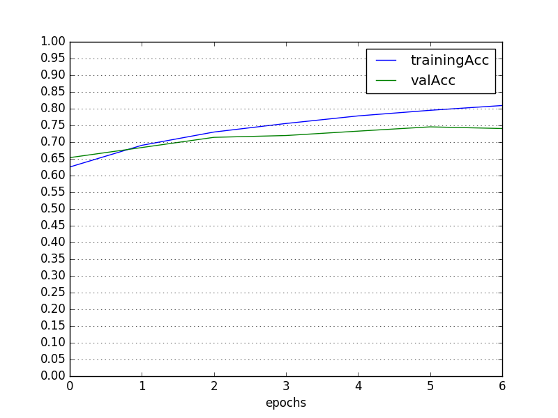
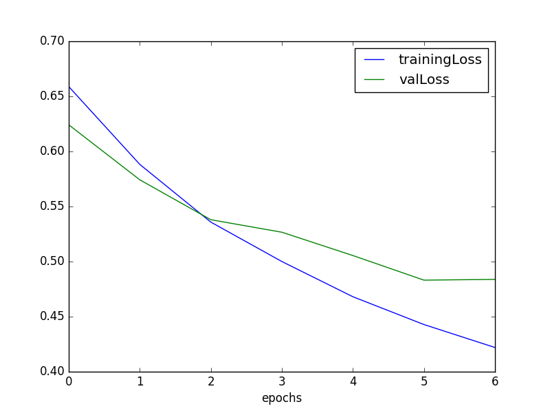
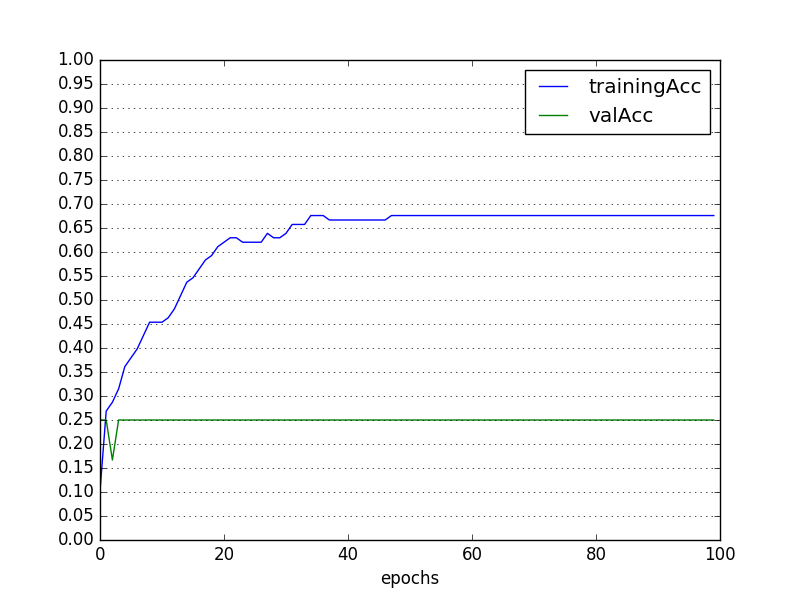
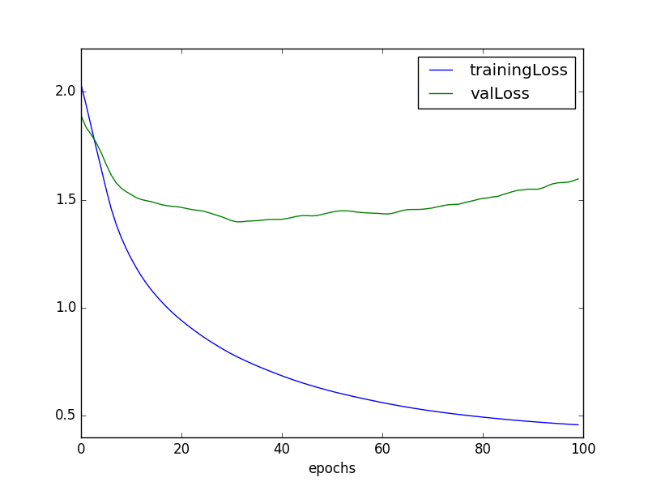
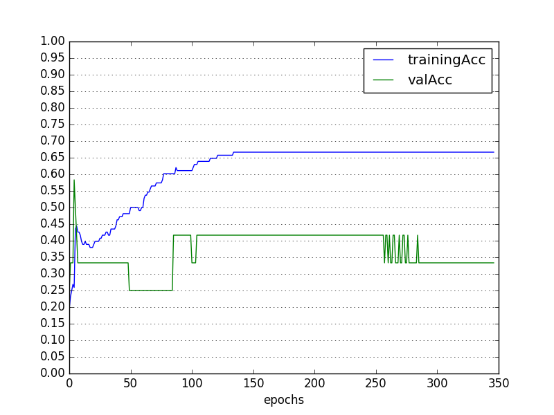
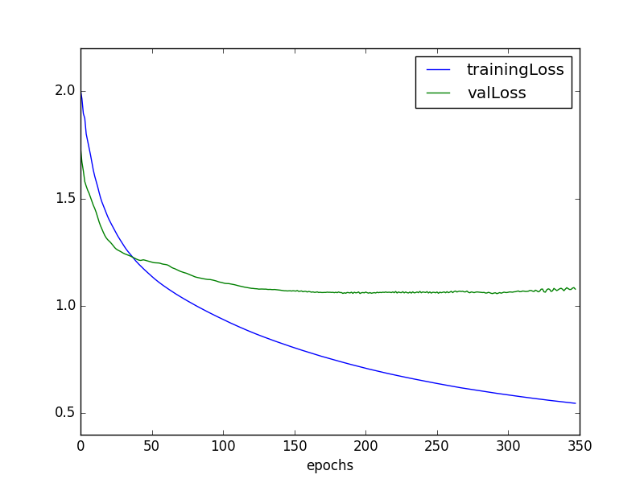
Applications of Critic: improving precision of lip reader, semi-supervised setting, to pin-point top out of top-5 predictions
Read papers on critic-based methods
Sanskrit phonemes for Indic language lip reading